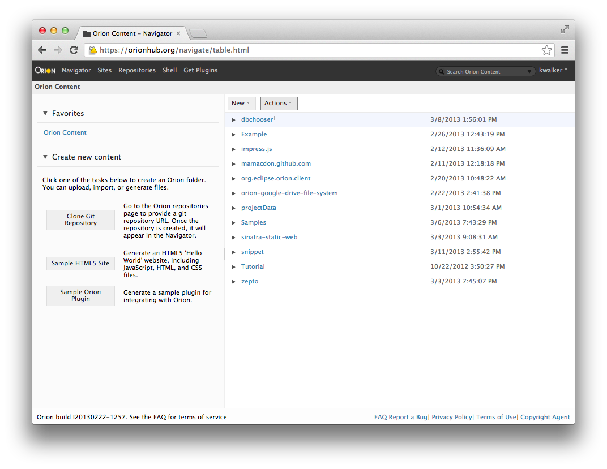
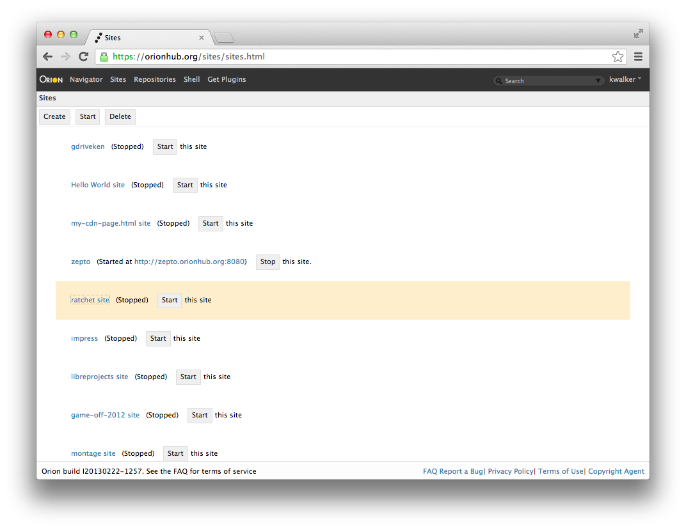
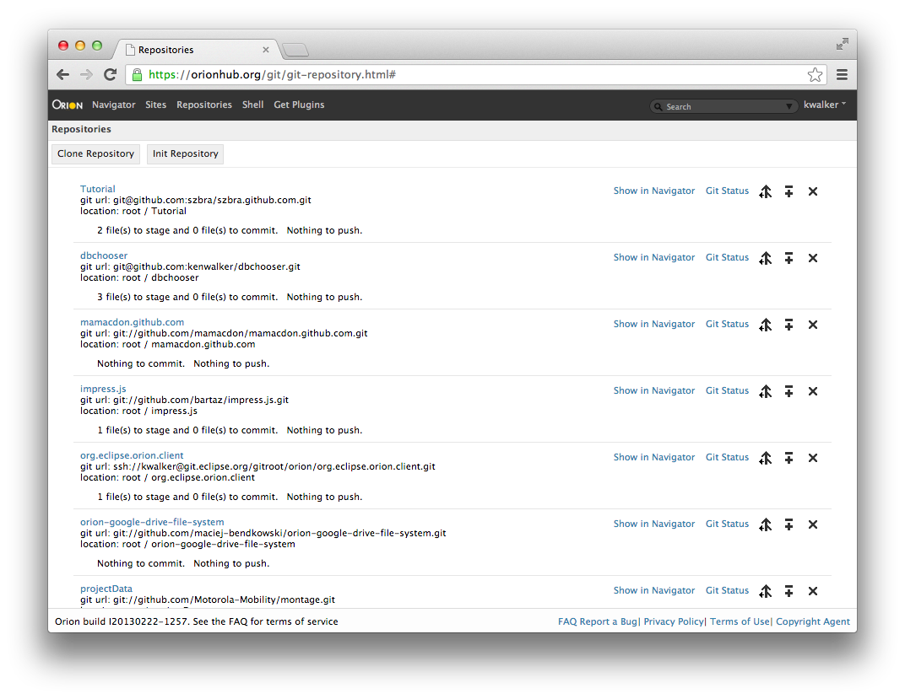
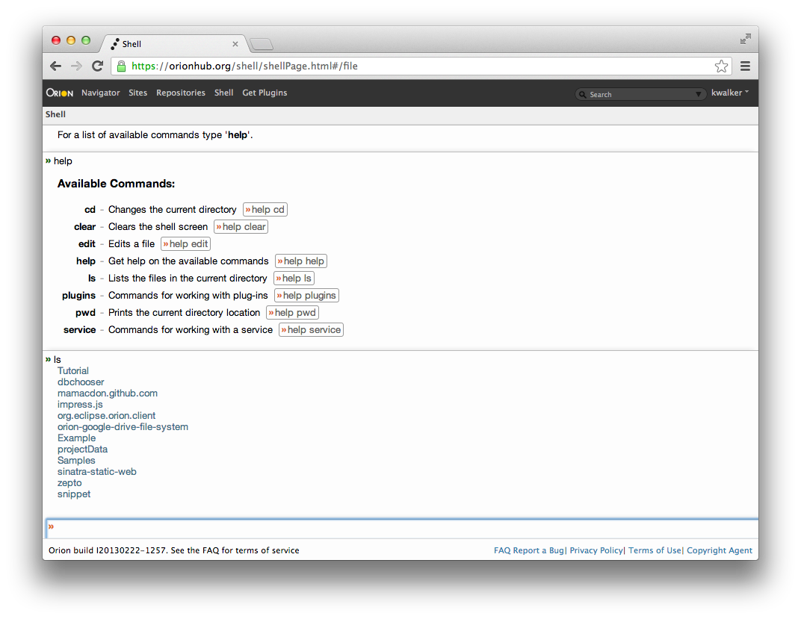
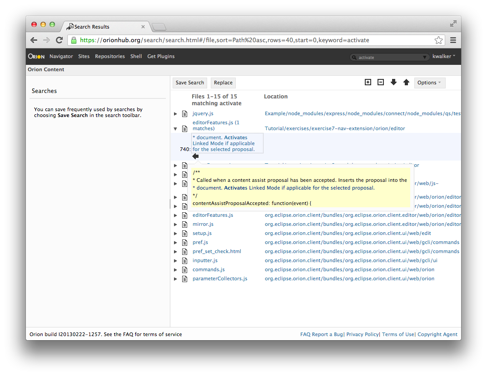
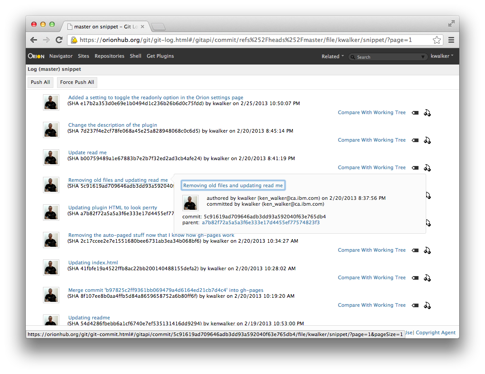

Cloud Formation
The Orion Tutorial
EclipseCon 2013
The Orion Tutorial
EclipseCon 2013
Presented by Ken Walker, Simon Kaegi, John Arthorne & Bogdan Gheorghe
What are we covering in the tutorial?
- Set-up!
- Intro to Orion and then your first Plugin
- Technical overview of Orion plugins
- Plugin Writing (including a break)
- Authoring a web site and Git (WiFi willing)
- Consuming Orion in your web site
Set up
- Install localhost version of Orion 2.0
- If on a Mac, arrow down...
- Run the
Orionexecutable - Wait for a bit...
- Open up http://localhost:8080
- Create an account named "tutorial" (email not required)
- Either Clone the Tutorial from Github or Get this Tutorial into Orion in an "OrionTutorial" folder
- You're ready to code!
- Use a Terminal and go to orion.app/Contents/MacOS
- Create
orion.conffile - Add the line:
orion.site.virtualHosts=127.0.0.2,127.0.0.3 - In the terminal run:
$ sudo ifconfig lo0 alias 127.0.0.2 up
$ sudo ifconfig lo0 alias 127.0.0.3 up
Go back up
Orion is about software development in a browser
- NOT like a desktop IDE (the web is the platform)
- promotes a page-oriented web experience
- addresses “core coding” activities and extensions
- support workflows across a set of linked web pages
Here are some examples of the pages in Orion
Sites Page
Repositories Page
Shell Page
Search Page
Git Log Page
Useful Orion shortcuts?
You can always see the shortcuts available on a page by using Shift+? or if you're in the editor it is Shift+Cmd+? or Shift+Ctrl+? (Mac)
- Shift+Ctrl+F (Shift+Cmd+F) - Find file
- Ctrl+O (Cmd+O) - Toggle Outliner
- In the Editor....
- Ctrl+Space - Content assist
- Ctrl+L (Cmd+L) - Goto Line #
- Ctrl+. (Cmd+.) - Goto next annotation, handy for this tutorial
- Ctrl+/ (Cmd+/) - Toggle line comments, also handy for the tutorial
Settings Page
- If you goto the Settings Page there are several options that can be changed in Orion. One important one before you go checking out any of your Git projects is your Git Config
- You can also enable remembering your Git credentials, these are only stored locally in the browser, not on the Orion server
What are Orion plugins?
- Orion plugins are 'separate' HTML pages hosted in non-visible IFrames
- Orion pages are designed to be 'extended' with plugins
- Orion applications are NOT made up of plugins.
- Plugins are isolated and secure against direct modification of the hosting page
- See the Plugin Documentation
Your First Plugin
You're going to finish writing a plugin that will allow you to install a plugin right from the Navigator itself. Kind of meta but useful during development.
- Navigate into Exercise 1
- You'll leverage the orion.navigate.command service
- Edit the plugin-installer.js file and fix the code near the TODOs
- When you're done, you install the HTML part of that plugin on the Settings Page
- Select plugin-installer.html in the Exercise 1 directory
- Then choose the menu item Action->(whatever name you gave your command)
- The settings page should open with your filename filled in as the plugin to install
More about plugins....
- Plugins are just HTML pages that follow a communication protocol
- Advertises “cacheable” capabilities/properties using window.postMessage
- Allows cross-origin communication and independent implementation
- Uses Structured Clone Algorithm to support binary data exchange
What type of plugins are there?
- Application Linking (URI Templates / Hyperlinks)
- Link from Navigator to Editor without hard-coding
- Metadata (Name / Value pairs)
- Action Labels, Cache information, Filters
- Service Provider (JSON-RPC variant / binary support)
- File Content, Editor Outline, Editor Actions
On to more exercises....
So let's add a bit of Markown support to Orion
- Let Orion know about the content type (text/x-web-markdown)
- Add an editor action (button) for Markdown lists
- Some simple content assist for Markdown
- Add some simple syntax highlighting by using a grammar
1) Adding content type support for Markdown
- Navigate to the Exercise 2 directory
- You can see the .md file and edit it but it's not very interesting
- Select the markdownPlugin.html file and use your exercise 1 plugin to install it
- Refresh the page and you should have a
 Markdown icon in the navigator
Markdown icon in the navigator - Let's edit the plugin and look at how that is done
2) Add an editor action (button) for Markdown lists
Markdown lists start with a * so lets make an Orion editor button to convert to and from Markdown list format.
- Let's edit the plugin again
- You should highlight all the commented out code in section TWO and press Ctrl+/ (Cmd+/ on Mac)
- If you save you should see errors, that's where you want to look
- Review our reference doc for orion.edit.command to see what to fill in
3) Some simple content assist for Markdown
We'll provide some simple content assist. If the buffer is empty, provide a default Markdown file. Also provide some other proposals.
- Let's edit the plugin again
- You should highlight all the commented out code in section THREE and press Ctrl+/ (Cmd+/ on Mac) the Save
- Look at the TODOs
- One is to figure out a new proposal, the second is to be smart about where to put the cursor after inserting
- Review our reference doc for orion.edit.contentAssist
4) Add some simple syntax highlighting by using a grammar
There are two ways of doing syntax highlighting. The easiest is using a Grammar.
- Let's edit the plugin again
- You should highlight all the commented out code in section FOUR and press Ctrl+/ (Cmd+/ on Mac) the Save
- You don't have to code anything but look at how the grammar is constructed and plugged in
- Review our reference doc for orion.edit.highlighter
Break
Embedding the editor
The Orion Editor is made up of a number of different parts.
- TextView and supporting base classes
- Events and Keybinding handling
- Rulers and Annotations
- DND and Tooltips
- Undo stack
- Content Assist and Syntax Hilighting
- Theme support
- Editor and Editor Features
Orion Standalone Build
The editor standalone build puts together a set of classes that are useful for most Web editing needs.
- 2 types of builds: one for users of RequireJS and one for users who want to embed the editor without any other dependencies.
- The builds are identical in functionality and are available both minified and non-minified.
- Built regularly as part of the overall Orion build
Orion Standalone Build
The editor standalone build puts together a set of classes that are useful for most Web editing needs.
- Includes:
- JS/CSS/HTML Syntax Highlighting
- Basic Content Assist, etc. (all the stuff from the previous slide)
- Doesn't Include:
- Linters (for JS/CSS/HTML - no errors/warnings)
- AST based content assist (esprima)
- other language support (investigating this)
Much easier to embed the editor everywhere
Webpages!
Blogs!
Even this presentation!
function linkify( selector ) {
if( supports3DTransforms ) {
var nodes = document.querySelectorAll( selector );
for( var i = 0, len = nodes.length; i < len; i++ ) {
var node = nodes[i];
if( !node.className ) ) {
node.className += ' roll';
}
};
}
}
Embedding editor into an HTML site
The mission: use the editor build to embed the editor into an existing webpage. Here are the steps:
- Get the initial webpage content from orion.html in exercise 3.
- You can see the webpage by opening as Raw
- Add a link to the nav section of the page: "Edit Code Here!"
- Add the RequireJS code needed to load the AMD build. Doc is available here.
Embedding editor into an HTML site
More steps:
- Add a div to contain the editor. This should come right after the "Embed Orion into your Application" section and before the Contact Info section.
- Create a pre within the div to host the code you want shown in the editor.
- (BONUS) Add some code to animate the scrolling from the top link to the editor.
Playing around with the various editor build configuration options
- Now that the editor is safely embedded in the page, let's look at some of the configuration options available.
- The full list is available in the JSDoc of edit.js.
- To use these, add "data-editor-" to option name and add it to the editor pre.
- For properties that are camel cased, separate the words and add a dash.
- Ex: fullSelection becomes
data-editor-full-selection="false"
Here are some properties to play around with:
- readonly - whether the view is readonly
- fullSelection - whether the view is in full selection mode
- tabSize - number of spaces in a tab
- tabMode - whether the tab keypress is consumed by the view or is used for focus traversal.
- wrapMode - whether the view wraps lines.
- lang - the styler language. Plain text by default
- showLinesRuler - whether the lines ruler is shown
- showAnnotationRuler - whether the annotation ruler is shown
- showOverviewRuler - whether the overview ruler is shown
- showFoldingRuler - whether the folding ruler is shown
Orion Snippet Editor
The mission: use the editor build to create a JS Fiddle like Orion plugin. Here are the steps:
- Take the skeleton HTML and create the divs needed to host 4 editors
- Give 3 of the divs HTML, CSS and JS unique IDs and set the editor language attributes
- Add an iframe to hold the final results
- Add Run, Save and Load buttons at the top of the page
- Add the save field next to the Run
- Hook in the snippet editor JS using RequireJS
Orion Snippet Editor
Add the JS:
- Write some initial JS to create the editors
- Fill out the runSnippet function and hook up the Run button
- Fill out the saveSnippet function and hook up the Save button
- Fill out the loadSnippet function and hook up the Load button
- Try out some sample content from content1, content2 and content3
Themes!
The Orion editor is also capable of being themed.
- Number of themes exisit for the editor in Orion.
- To see an exhaustive list of styling possibilites, check out built-editor.css
- The Orion editor themes use a smaller subset of the styling possibilities for now
- To set a theme on a class, add the
data-editor-themeattribute to the div.
Some themes to try:
- /exercise-4/snippet_files/themes/adelante.css
- /exercise-4/snippet_files/themes/ambience.css
- /exercise-4/snippet_files/themes/blue.css
- /exercise-4/snippet_files/themes/eclipse.css
- /exercise-4/snippet_files/themes/nimbus.css
- /exercise-4/snippet_files/themes/prospecto.css
- /exercise-4/snippet_files/themes/raspberrypi.css
- /exercise-4/snippet_files/themes/tierra.css
Pick 3 themes you like to help differentiate the editors (if you don't like any of them, feel free to hack them).
Create a plugin to integrate the snippet editor into Orion
The (secret) mission: Using your knowledge of plugins, use orion.page.link to add your SnippetEditor to the Orion site. Here are the steps:
- Create a plugin template (plugin.is in the snippet_files folder).
- Register the orion.page.link service and your snippetEditor.html as the URI template.
- Install the plugin into Orion.